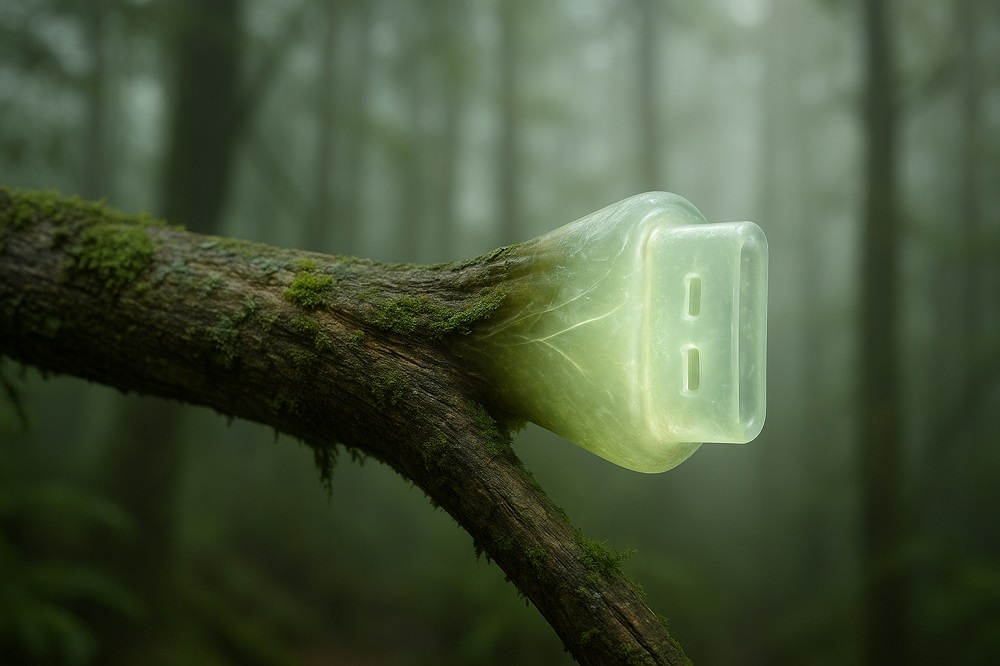

What is this?

A territory under construction
This space is not a series of blog posts. Nor is it an archive. Or a collection of publications.
It's a territory. A way of thinking about knowledge, memory, meanings, sounds and silences.
I work with libraries, archives, metadata, flutes, ruins, instruments that sing, technologies that organize, and with everything that remains outside, in that diffuse space that some call the margins and that I call home.
Here there are writings, experiments, ideas, explorations, gestures, few solutions and many doubts. Because nothing is closed. Everything is to be traced. And, for someone like me, that is excellent news.
My name's Edgardo Civallero. Welcome to my website.
[Profile]
Chronicles of a biblio-naturalist | The most recent post
Coral Reefs That Remember
| Silenced Knowledges and Memories in the Tropics (04) | Published: April 24, 2025 |
In the tropics we tend to think of memory with roots: trees, soil, leaves. But there are liquid, submerged memories that also archive: those of the sea.
Blog The Log of a Librarian | The most recent post

Not Neutral, Not Safe
| Decolonizing my Library (13 of 15) | Published: May 20, 2025 |
A library collection is not innocent. It never was. It is a map of recorded voices. And of all those left out.
Critical notes | The most recent post

Ecological Justice
| Leaving Green Libraries Behind (09 of 10) | Published: April 11, 2025 |
Solar panels and recycling do not make a fair library. The green discourse of the North does not solve the global imbalance that sustains it.